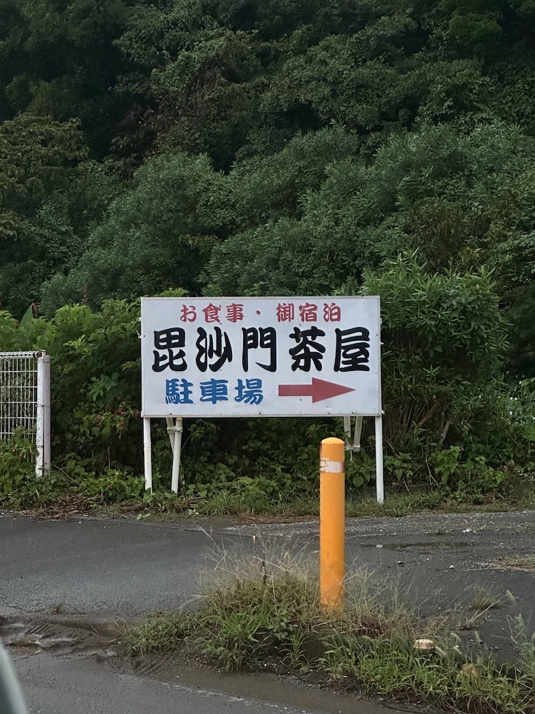
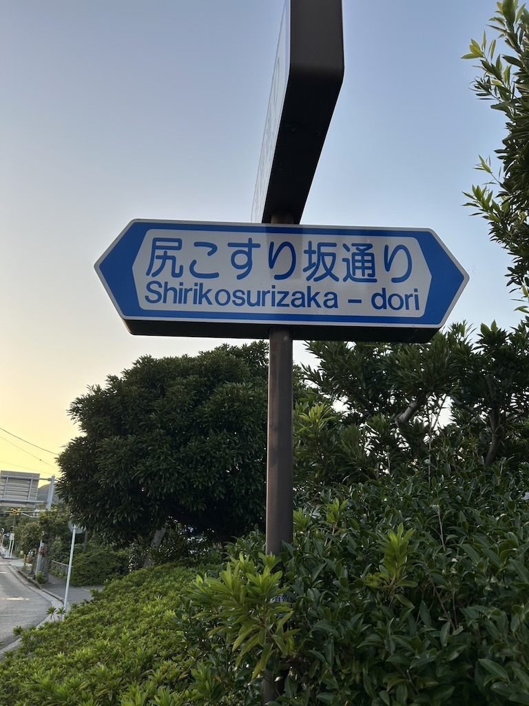

路上観察
Assignment No.2
路上観察
第1週

撮影場所・・・神奈川県 三浦市
撮影日時・・・10月5日
この課題を行うためにあてもなく車を走らせていた際に目に留まった看板。
デザインは至って普通であるが、「毘沙門」という文字のインパクトに惹かれてしまった。
どうやらこの看板のある地域は、三浦市毘沙門という地名らしい。
第2週

撮影場所・・・神奈川県 横須賀市 野比
撮影日時・・・10月12日
今週も車を走らせ、信号待ちをしていた時に見つけた標識である。
「尻こすり坂通り」
近所すぎて何も感じていなかったが、よくよく考えると面白い名前だなあと感じた。
由来を調べてみたところ、「荷車を坂を押して下るときに、坂が急なため荷車の後部を擦ったことに由来している」とのことだ。
まさにその名の通りであった。